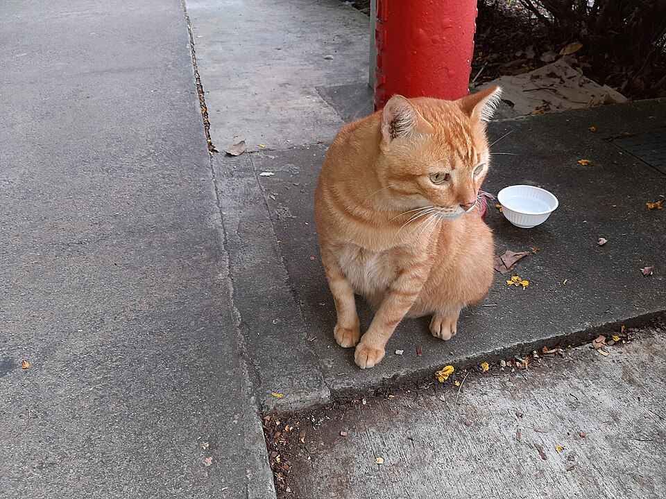

WANKAI / USER-DIRECTED REVISION / MODEL STUDY v03
Seated orange tabby · enormous floating paws
A low seated body, tucked feet and curled tail. Two white paw weapons float beside it with clear gaps and no arms or connecting mesh. Each palm is wider than the head and almost twice the previous hand width.
Hand size and seated silhouette · 4 seconds
Authored design turntable of the revised primitive model. Original orange-tabby face and markings retained.
Sitting-pose reference

Orange Tabby Cat Sitting Down by Asabae2752 · CC BY-SA 4.0. Unmodified source preview. Used for seated gesture. Secondary frontal reference by elljay.
Ordinary controls and recovery · 40 seconds
Current game solver with an isolated floating-paw proxy adapter. W/S, A/D, all four combinations, release/reversal, landing and opposite-input cancellation. Invisible constraints transmit contacts; the body retains its seated shape. This is prototype footage.
The much larger paw volumes currently produce about 2.12 units of rise, lateral drift and gravity-driven movement after release or canceled input. This behavior needs tuning before production; the size and pose are ready to inspect here.
Hits, sword interception and clash · 12.5 seconds
Contact-confirmed vertical/horizontal hits, sword clash with recoil and a distant miss. Shared stamina, damage and repeat-hit rules use the current solver. Contact geometry remains provisional.
Jump to a move
Current design · Video coverage and measured findings · Historical standing v02 · Historical attached-paw v01